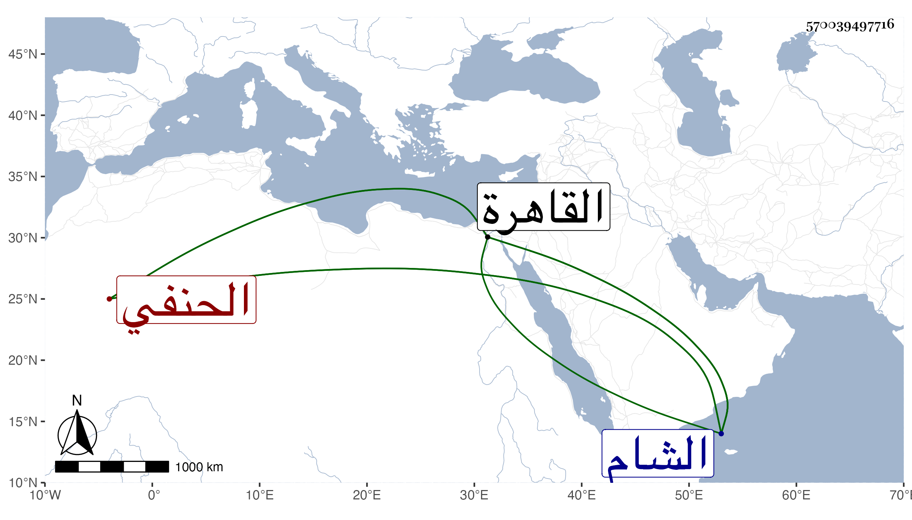

0902Sakhawi.DawLamic.ITO20230111-ara1.EIS1600.570039497716
Biography ID: 570039497716
252
عبد الرحمن بن عبد الله بن عبد الرحمن الحنفي بن الخشاب قال شيخنا في إنبائه اشتغل بالعلم في الشام ثم قدم القاهرة وناب في الحكم عن ابن العديم ثم ولي قضاء الشام في سنة تسع وثمانمائة فوصل مع العسكر فباشره يومين ثم سعى عليه ابن الكفيري فأعيد ثم ماتا جميعا في شهر ورود العسكر وبينهما في الوفاة يوم واحد ولم يبلغ هذا ثلاثين سنة رأيته بالقاهرة ولم يكن ماهرا في العلم .
